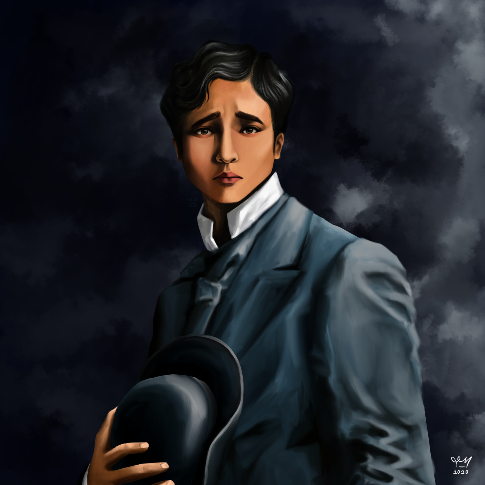

| Maria Clara |
 |
Having been separated from Ibarra, and hearing the news of his excommunication, she took ill, and eventually was blackmailed by Padre Salvi into distancing herself from Ibarra. She was also coerced into giving up Ibarra's love letters, which were ultimately used to implicate him. |
| Crisostomo Ibarra |
|  |
Ibarra was an earnest and idealistic young man. Influenced by his European education, he sought to improve the country; as part of this, he believed in the power of education to enact reforms and made efforts to establish a school in San Diego to this end. |
| Padre Damaso |
| |
On the day of the town fiesta, he gave a sermon, making vague swipes at Ibarra. During the celebratory dinner for Ibarra's school, Padre Damaso insulted Don Rafael's memory, causing Ibarra to almost kill him if not for Maria Clara's intervention. He then excommunicated Ibarra as a result. |
| Capitan Tiago |
| |
Capitan Tiago was an influential businessman in San Diego and the father of Maria Clara. Betrothing his daughter to Crisostomo Ibarra, Capitan Tiago struggled to obey the will of the friars. |
| Don Rafael Ibarra |
 |
Crisóstomo Ibarra’s father is posthumously mentioned in the novel. A critic of the corrupt practices of the Spanish friars, he earns the ire of the vitriolic Father Dámaso, who accuses him of sedition and heresy. He dies in prison before his name can be cleared. His remains are buried in the Catholic cemetery in the town of San Diego, but Father Dámaso hires a gravedigger to disinter his body to have him buried at the Chinese cemetery because of his status as a heretic. |